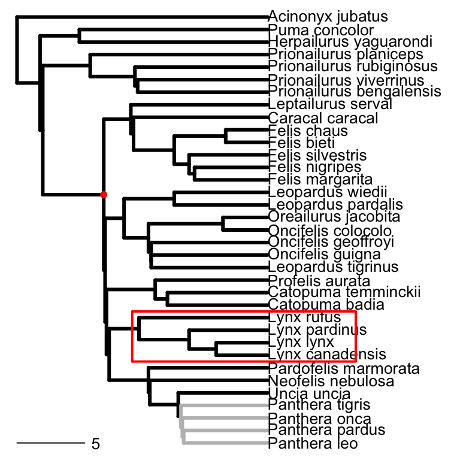
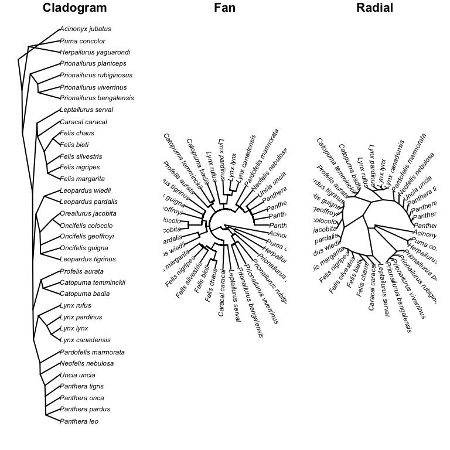

Basic plots
The basic tree plotting command is simply plot(). However, there is potentially much more to it than that. For example, you might want to highlight particular clades, or point out particular branching points, etc. We’ll use the cat tree that we have already produced.
For example, we could use which.edge function to identify the ancestral edges leading to members of a particular clade. Then we can use this information to plot a cladogram (see figure) with the edges coloured to highlight a particular clade, in this case Panthera. We can also easily add a scale bar using the add.scale.bar function, or highlight a clade with the rect function. We could also use mrca and nodelabels to highlight the the most recent common ancestor of the lion and the domesticated cat.
wh <- which.edge(CatTree,1:4)
colo <- rep("black", dim(CatTree$edge)[1])
colo[wh]<- "grey"
plot(CatTree, font = 1, edge.color = colo, edge.width = 3, no.margin = TRUE)
add.scale.bar(length=5)
rect(8.5, 7.5, 25, 11.5, col="red", density=0, lwd=2)
x <- mrca(CatTree)["Felis_silvestris", "Panthera_leo"]
nodelabels(text=NULL,pch=16, node=x,col="red")
Note: a cladogram is different from a phylogram (the default form taken when plotting a phylo object) in that it ignores branch lengths and represents the topology of the tree with arbitrary branch lengths.
Different forms of tree plots
You can ask R to draw the trees in any direction, with the direction argument in the plot function. For example, direction="downwards", direction="upwards" etc. In addition, the plot function can plot a number of other tree types including cladogram, fan-shaped trees, and radial trees (using the arguments, type="cladogram", type="fan", or type="radial" respectively (See figure below).
par(mar=c(1,1,1,1) + 0.1)
par(mfrow=c(1,3))
plot(CatTree,type="c",lwd=1,xpd=NA)
title(main="Cladogram")
plot(CatTree,type="fan",lwd=1,xpd=NA)
title(main="Fan")
plot(CatTree,type="radial",lwd=1,xpd=NA)
title(main="Radial")